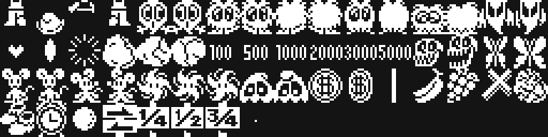

Los dieciséis primeros bytes son la cabecera que lee la BIOS:
4000 41 42 "AB", la firma de un cartucho
4002 4A 40 INIT = 0x404A
4004 00 00 00 00 00 00 STATEMENT, DEVICE y TEXT a cero
400A 00 x6 rellenoCon la cabecera en 0x4000 la BIOS mapea el cartucho en la página 1 (0x4000-0x7FFF) y salta a INIT al terminar de arrancar. De ahí el programa ya no vuelve: INIT escribe jp 0x4010 en el gancho H.KEYI (0xFD9A) y se queda en un jr $ de dos bytes en 0x4074. El juego entero corre dentro de la interrupción, un paso por fotograma.
De RAM se usa desde 0xE000, con la pila en 0xF000, así que basta un MSX de 16 KB.
SCREEN 2, con los ocho registros de 0x43FD:
| registro | valor | qué dice |
|---|---|---|
| R0 | 0x02 | modo gráfico 2 |
| R1 | 0xE2 | 16 K, pantalla e interrupción encendidas, sprites de 16 × 16 |
| R2 | 0x0E | tabla de nombres en 0x3800 |
| R3 | 0x7F | tabla de color en 0x0000 |
| R4 | 0x07 | tabla de patrones en 0x2000 |
| R5 | 0x76 | atributos de sprite en 0x3B00 |
| R6 | 0x03 | patrones de sprite en 0x1800 |
| R7 | 0xE4 | tinta 14 sobre fondo 4 |
En SCREEN 2 la pantalla está partida en tres tercios de ocho filas, y cada tercio tiene sus propios 256 patrones. Pippols carga los tres iguales, de modo que un número de carácter significa lo mismo esté en la fila que esté; sin eso, el fondo se rompería al cruzar la fila 8 o la 16.
Los 256 caracteres se reparten así:
| caracteres | qué son |
|---|---|
| 0x00-0x0F | fondo liso y adornos fijos (0x00 y 0x0C son la pareja vacía) |
| 0x09-0x0A | el suelo, que cambia en cada pantalla |
| 0x10-0x39 | la fuente: diez cifras y veintiséis letras |
| 0x40-0xFF | los 192 del fondo que se desplaza |
Esos 192 son la razón de ser del cartucho: ocho copias del mismo juego de 24 caracteres, cada una bajada un pixel más. Están explicados en El scroll al pixel.
Lo que va a la VRAM viene comprimido con un RLE de tres órdenes (0x43AE): un byte de mando, y si es 0 termina, si tiene el bit 7 a cero repite ese número de veces el byte siguiente, y si lo tiene a uno copia esos bytes tal cual. Con 0x80 empieza otro bloque con dirección nueva. La fuente, por ejemplo, ocupa 264 bytes en el cartucho y 336 en la VRAM; los patrones del logotipo de KONAMI, 151 y 216.
Los 52 patrones comunes se descomprimen de una vez en 0x1880 (0x5E67), y los del jugador se cargan aparte: hay 26 bloques en la tabla de 0x643A, y en cada fotograma se sube a 0x1800 el que corresponda al juego de sprites que toque —andando, sentado en el trono, muriéndose—, que es lo que hace que el enanito se anime sin gastar patrones de sobra.
La tabla de atributos lleva 32 sprites: el jefe, cuatro del jugador, diez enemigos, siete objetos, dos disparos propios y tres enemigos. El orden en que se escriben cambia de un fotograma a otro (0x7F83), un fotograma primero los enemigos y al siguiente los objetos, para que el límite del MSX de cuatro sprites por línea no tape siempre a los mismos.

| dirección | qué guarda |
|---|---|
| 0xE000/0xE001 | estado y subestado del programa |
| 0xE005 | el candado de la interrupción |
| 0xE010-0xE039 | los tres canales de sonido, 14 bytes cada uno |
| 0xE043-0xE048 | récord y puntos, tres bytes BCD cada uno |
| 0xE050 | vidas |
| 0xE060-0xE0EF | el buffer de la tabla de nombres: 24 filas de 6 bytes |
| 0xE100/0xE101 | la posición en la fase, en pixeles |
| 0xE103 | la fase de fondo (0-7) |
| 0xE11C | el desplazamiento de 0 a 7 pixeles dentro del carácter |
| 0xE120-0xE126 | el jugador: estado, sentido, animación, Y, X y sprites |
| 0xE132 | en qué pantalla del mundo se está (0-17) |
| 0xE1B0-0xE1C7 | tres disparos enemigos de 8 bytes |
| 0xE1E0-0xE1EF | los dos disparos del jugador |
| 0xE200-0xE29F | los diez enemigos, 16 bytes cada uno |
| 0xE400-0xE42F | los siete objetos, 6 bytes cada uno |
| 0xE500-0xE91F | las 44 piezas del mapa, 24 filas cada una |
| 0xEA00-0xEABF | las cuatro tiras del fondo y sus cuatro de color |
La ficha de un enemigo son 16 bytes: tipo, subestado, animación, contador, Y, X, patrón, color, las fracciones de Y y de X, la velocidad en Y y en X en coma fija de 8.8, y el objetivo. Un tipo negativo quiere decir que se está muriendo.
| bytes | ||
|---|---|---|
| código | 9099 | 55,5 % |
| datos | 7285 | 44,5 % |
| sin identificar | 0 |
Los datos, por dentro: 1201 son las pistas de música y efectos, 1485 los patrones de sprite comunes comprimidos y 883 los 26 bloques del jugador, 647 el mapa entero (el diccionario, la secuencia, los tramos y los planos), 409 las tiras del fondo con su color, 408 el logotipo de KONAMI y el título, 358 las listas de objetos de los seis caminos y 264 la fuente. El resto son tablas de a decenas de bytes: los enemigos que le tocan a cada fase, las curvas del movimiento lateral, los pasos del salto y las esquinas por las que entra cada bicho.
Al final del cartucho hay 45 bytes de relleno a 0xFF y, detrás, nueve bytes que no lee nadie: están en Preguntas abiertas.